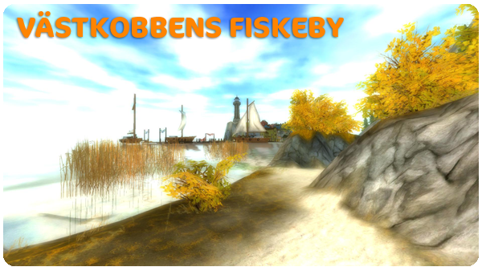
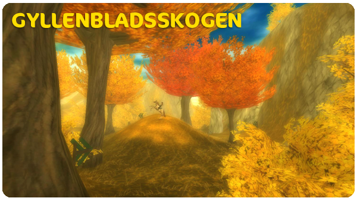
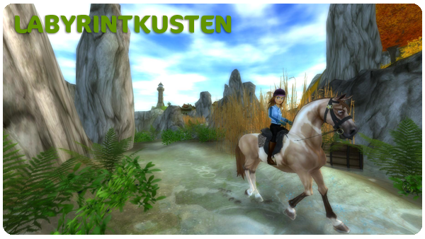

Hejsan!
Här kommer veckans uppdateringar!
Nya kläder och utrustning i butikerna:
Den andra förväntade laddningen av kläder och utrustning har äntligen kommit till Silverglade! Flera butiker har fått påfyllning. .
Funktioner:
Vi har ändrat lite i uppdragsloggen. Alla stallsysslor har fått en egen flik som heter sysslor och fliken med dagliga uppdrag visar bara de uppdrag som faktiskt finns tillgängliga under aktuell dag.
Information om Gyllenåsarnas dal:
Snart kan ni sluta längta, den 5:e Juni öppnar Gyllenåsarnas dal! Vi putsar på områdets nya uppdrag och tävlingar just nu, samtidigt som vi arbetar med ytterligare områden som ska öppnas upp under året.
Här kommer lite bilder på Gyllenåsarnas dal för er att tjuvkika på så länge!



Hemsidan:
Som ni kanske har sett så kan man nu logga in med Facebook! Det betyder att om du har Facebook och har registrerat dig här på Star Stable med samma E-postadress som du har när du loggar in på Facebook så kan du lätt logga in här på Star Stable genom att klicka på "Logga in med Facebook".
Vi fortsätter arbetet med att göra Star Stable ännu bättre!
Vänliga hälsningar: